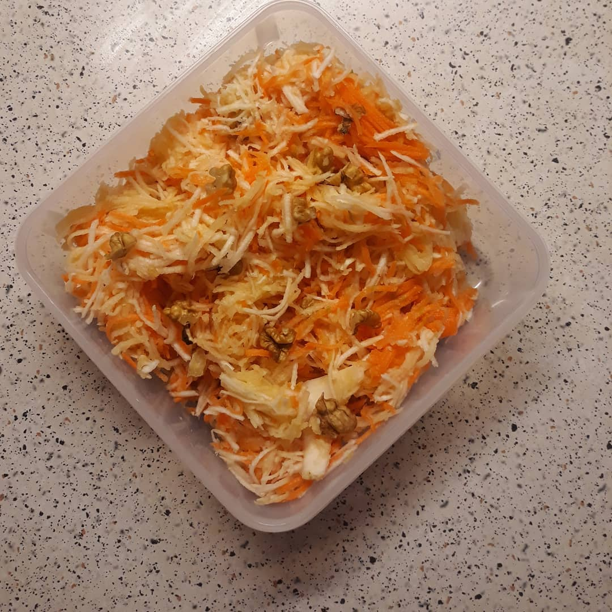

Zelerový šalát podľa @zivot_po_60tke — Normy Jedál
Zelerový šalát
Nastrúhaný zeler, mrkvu a jablko ochutíme citrónovou alebo limetkovou šťavou a necháme odležať. Môžeme dochutiť posekanými vlašskými orechami , hrozienkami alebo sušeným ovocím.
.
.
.
#zelerovysalat #zdraverecepty #zeleninovydezert #dnesvarim #dnesjem #jedlobezcukru #jedlobezmuky #vegetarian #viemcojem #varimslaskou